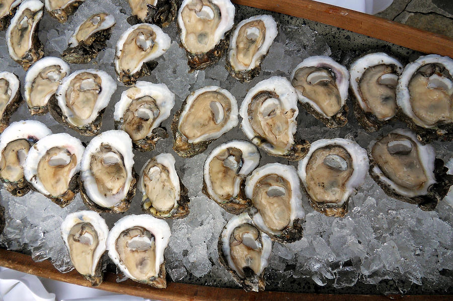

Oysters served with lemons, laying on ice

Rather preparing, than cooking
Oysters are enjoyable as snacks or as a starting dish.
With their salty taste and the lemon infused sea-water which they get served with, they are very refreshing and delicate.
Things you will need
- Oyster Knife
- Oysters
- Lemon(s)
- Crushed ice
- big plate
Step by step
Open the Oysters with the Oyster knife, and don't spill the sea water
Split the lemons into quarters
Squeeze some lemon juice on to the opened Oysters
Put the crushed ice on the plate
Place the Oysters and some of the lemon quarters on the ice
Serve